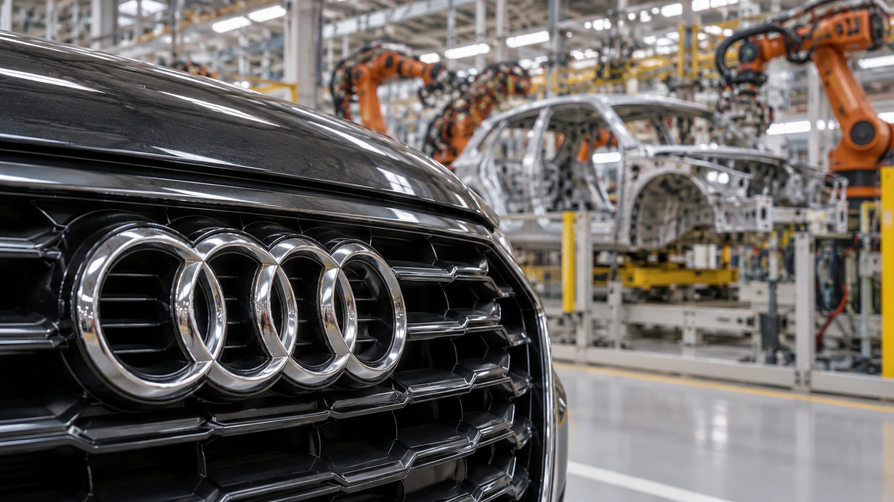

Audi plans a $4 billion Georgia plant, turning tariff pressure into a long-term US investment
Audi plans its first US factory with capacity for 200,000 SUVs a year. The investment promises a local production base, with full output years away.

Audi plans to invest about $4 billion in its first US manufacturing plant, giving the Volkswagen-owned premium brand a domestic production base after years of serving American buyers with imported vehicles. The project, announced in Georgia on October 24 and detailed by Audi on October 25, targets annual capacity of up to 200,000 SUVs and approximately 4,500 jobs. Its immediate significance is a multiyear capital commitment, while the production benefits remain years away.
President Donald Trump announced the investment at a rally in Perry, Georgia, alongside Audi Chief Executive Gernot Döllner. Audi and the state separately confirmed the project. Reuters placed the decision against the pressure of US auto tariffs, reporting that the company currently imports its American-market vehicles from Europe or Mexico. Local assembly would change part of that exposure, although the final cost of an American-built vehicle would still depend on its components and supply chain.
A major investment with a staged timetable
The state identifies the Middle Georgia Megasite as the location. Its release gives a more detailed schedule than the company’s broad description: grading is expected in 2027, construction in 2028 and full production in 2031. Audi describes construction beginning in 2027 and production in the early 2030s. Those descriptions should not be compressed into a claim that the plant opens next year. Site preparation, construction and a factory operating at full capacity are separate milestones.
The projected 200,000 vehicles are annual capacity, rather than an existing order book or a guaranteed sales forecast. Similarly, the job figure is a planned result of the investment. Hiring, supplier contracts and construction spending will arrive on their own schedules. For local businesses, the opportunity therefore lies partly in preparing for the project’s development stages, rather than assuming the entire economic contribution appears when the announcement is made.
Georgia says the site has nearby industrial utilities, Class I rail access through Norfolk Southern and connections to the ports of Savannah and Brunswick. Georgia Quick Start will work with Audi on customized training, alongside technical-college campuses. Those details matter because a vehicle plant depends on a much wider operating system than its assembly line: employees, logistics, suppliers and utilities must be ready at compatible times.
Domestic assembly changes costs without settling them
Audi describes North America as a third major pillar of its production network alongside Europe and China. It presents the investment as a way to strengthen competitiveness and reduce trade and currency risks. That is the company’s strategic case, rather than an independently established return on the $4 billion. A factory can bring production closer to buyers while also creating substantial fixed costs that need sufficient demand over time.
Our guide to who bears a tariff’s cost explains why the location of final assembly is only one part of the calculation. Imported components can retain their own trade exposure, while companies can absorb costs, change sourcing or adjust prices. Audi’s announcement does not establish how much of any eventual saving would reach buyers, nor does it provide a complete future sourcing mix for the Georgia operation.
There is also a timing issue. The investment is being announced under today’s trade conditions, but vehicles are expected to emerge under the conditions prevailing in the early 2030s. Management must therefore assess a long-lived asset against more than the current tariff schedule. Our reporting on changes to Canadian-product tariffs illustrates how individual product coverage and effective dates can shift even within an established trade dispute.
The test is execution and returns on the new capacity
For Volkswagen investors, the commitment belongs in an assessment of the parent group’s capital allocation, not in a standalone stock valuation for Audi. Our explanation of free cash flow sets out why investment spending and reported earnings answer different questions. Building productive capacity requires cash before the resulting vehicles can generate revenue. The announcement alone does not establish the eventual margin, utilization rate or payback period.
The next useful evidence will be the project’s construction progress, supplier arrangements, hiring milestones and more specific production plans. The opportunity is clear: a large US base could bring Audi closer to an important market. The financial result will depend on delivering that base at a competitive cost and selling enough vehicles to use it. Neither the capacity figure nor the investment headline settles that outcome.
Sources and methodology
Sources checked October 25, 2026. Reported findings and company or regulatory statements are attributed in the text; discussion of financial implications is editorial analysis. The generated cover is illustrative.